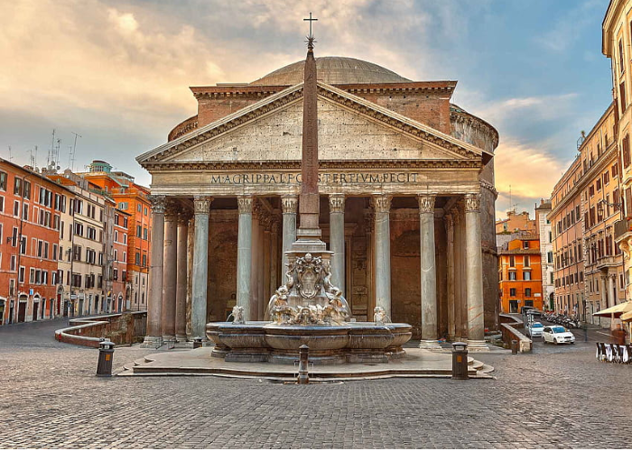

Patheon

Pantheon significa “todos os deuses”, em grego. Também conhecido como Pantheon de Agripa, nada mais é do que o monumento romano mais bem preservado tanto em estrutura quanto em revestimentos e ornamentos.
A construção foi inaugurada por volta de 27 aC e patrocinada pelo então cônsul Marco Vipsânio Agripa, durante o reinado do Imperador Augusto e depois foi reconstruída pelo imperador Adriano por volta do ano de 126 a.C.
O templo foi erguido com a finalidade de servir como local dedicado ao culto de todos os deuses.
Após a queda do Império Romano, para combater fervorosamente qualquer resquício de paganismo e panteísmo, em 609 a.C, o local foi transformado na Basílica de Santa Maria dos Mártires.
O Pantheon tem servido de inspiração a outras construções onde mortos ilustres são honrados ou enterrados.
Dentro do edifício estão sepultados grandes personagens da história italiana, como rei Vittorio Emanuele II de Saboia, a rainha Margherita da Saboia, além do gênio do Renascimento Rafael.
A cúpula do Pantheon
O que torna o Pantheon famoso mundialmente é, sem dúvidas, sua cúpula de grandes proporções – sua abertura ou óculo, como é chamada, possui 9 metros de diâmetro.
Isso porque, a obra não é sustentada por nenhum tipo de coluna ou pilar, dando um verdadeiro nó na cabeça de estudantes de arquitetura e engenharia do mundo todo que passam por ali tentando buscar explicações para tal feito.
A obra é de concreto moldado com uma espécie de caixotão construído sobre um cimbramento provisório.
Os materiais utilizados no concreto da cúpula são variados, sendo os da base mais sólidos e pesados, e os do óculo, feito com um concreto mais leve usando pedra pomes.
O óculo, por sua vez, é a principal fonte de luz natural do atrativo, o que dá margem para que a chuva também entre na construção. No total, são vinte e dois ralos usados para escoar a água.
Em relação ao peso dessa verdadeira beldade, funciona da seguinte maneira: o peso da cúpula se concentra em um anel de compressão, que forma o óculo, redistribuindo o peso para as estruturas inferiores – oito abóbadas e oito pilares.
Já os caixotões, além de produzirem um ótimo efeito estético, principalmente após os revestimentos de pintura), também retiram o peso da cúpula, pois reduziram a quantidade de concreto a ser utilizada na construção, deixando essa estrutura bem mais leve.